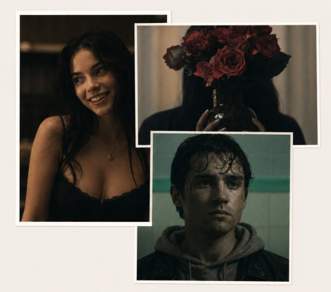

There's something about the way Gen Z engages with horror and thrillers that feels different from any generation before. Maybe it's the way we grew up with the internet — where the creepiest things weren't always jump scares in a theater, but the stuff that lived in the corners of YouTube, Reddit threads, and analog horror series that felt like they were made just for us. We don't just watch horror. We collect it, analyze it, make TikToks about it, and turn it into aesthetic mood boards. Two films that capture this new wave perfectly are Obsession and The Backrooms — each terrifying in completely different ways.
Obsession: The Thriller That Stays With YouObsession is the kind of movie that gets under your skin before you even realize it's there. It's not a horror film in the traditional sense — no monsters, no gore, no obvious scares. Instead, it's a slow-burn psychological thriller that builds tension through atmosphere, silence, and the unsettling feeling that something is just slightly off in every frame. The less you know going in, the better. But what makes Obsession so effective is how it weaponizes the things we usually ignore — the way a door creaks, the way a conversation lingers a beat too long, the way a familiar face suddenly feels陌生. For a generation that consumes thrillers through streaming in the dark at 2 AM, Obsession feels like it was made specifically for that experience. It rewards close attention and punishes distraction.
The Backrooms: Internet Horror Done RightThe Backrooms is something else entirely. Born from an internet creepypasta and transformed into a full-blown cinematic experience, it taps into a fear that feels uniquely digital: the fear of liminal spaces, of endless hallways, of places that look familiar but are fundamentally wrong. The original concept — that you can "clip through" reality into an infinite maze of yellow, fluorescent-lit office rooms — has become one of the defining horror myths of Gen Z. The film adaptation leans into that dread with a slow, atmospheric build that prioritizes unease over action. It understands that the scariest thing isn't what jumps out at you, but what might be waiting just around the corner of an endless corridor. It's the kind of horror that feels like a creeps forward on your phone screen — intimate, immersive, and deeply weird.
Together, Obsession and The Backrooms represent two sides of modern horror: the psychological thriller that lives in the margins of everyday life, and the internet-born nightmare that turns digital spaces into places of fear. Both prove that Gen Z doesn't just want to be scared — we want to feel unsettled, challenged, and left thinking long after the credits roll.
Until next week — stay chévere